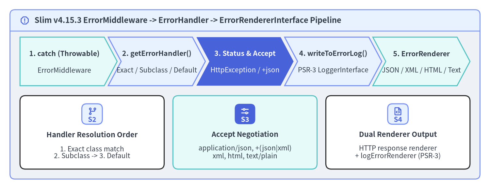
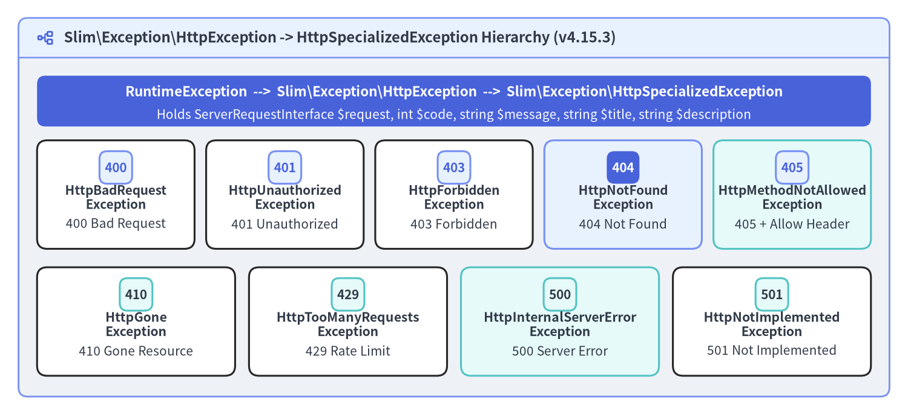

ErrorMiddleware & Custom Renderers
Slim\Middleware\ErrorMiddleware is the outermost exception boundary in a Slim (v4.15.3) application. Placed last via $app->addErrorMiddleware(...) so it executes first in the LIFO middleware stack, it wraps downstream execution in a try / catch (Throwable $e) block, extracts the most recent ServerRequestInterface from HttpException instances, resolves a matching ErrorHandlerInterface, logs diagnostic traces through a PSR-3 LoggerInterface, and renders content-negotiated responses (JSON, XML, HTML, or PlainText).

Source Code
from drawlib.canvas import save, setup
from drawlib.icons import phosphor
from drawlib.shapes import rectangle
from drawlib.smartarts import CardList, ChevronProcess, Panel
from drawlib.styles import Styles
from drawlib.text import text
setup(width=196, height=76, dpi=150)
outer = Panel(
"Slim v4.15.3 ErrorMiddleware -> ErrorHandler -> ErrorRendererInterface Pipeline",
style=Styles.Neutral.patch(shape_r=2.0),
header_style=Styles.PrimaryNeutral.patch(shape_line_width=1.2),
text_style=Styles.DarkBold.patch(text_size=11.5),
icon=phosphor.warning_octagon,
icon_style=Styles.PrimaryBold,
header_variant="filled",
header_height=8.5,
)
outer.draw((4.0, 4.0), width=188.0, height=68.0)
proc = ChevronProcess(
style=Styles.White,
text_style=Styles.DarkBold.patch(text_size=10.2),
description_style=Styles.Dark.patch(text_size=10.0),
corner_angle=62.0,
spacing=1.6,
flat_left_end=True,
)
proc.add(
"1. catch (Throwable)",
description="ErrorMiddleware",
style=Styles.SecondaryNeutral,
)
proc.add(
"2. getErrorHandler()",
description="Exact / Subclass / Default",
style=Styles.PrimaryNeutral,
)
proc.add(
"3. Status & Accept",
description="HttpException / +json",
style=Styles.PrimaryFlat,
text_style=Styles.WhiteBold.patch(text_size=10.2),
description_style=Styles.White.patch(text_size=10.0),
)
proc.add(
"4. writeToErrorLog()",
description="PSR-3 LoggerInterface",
style=Styles.PrimaryNeutral,
)
proc.add(
"5. ErrorRenderer",
description="JSON / XML / HTML / Text",
style=Styles.SecondaryNeutral,
)
proc.draw(xy=(8.0, 41.5), width=180.0, height=19.5)
cards = CardList(
style=Styles.White,
text_style=Styles.DarkBold.patch(text_size=10.5),
description_style=Styles.Dark.patch(text_size=10.0),
badge_shape="rounded_rect",
badge_style=Styles.PrimaryNeutral,
badge_text_style=Styles.PrimaryBold.patch(text_size=10.0),
icon_style=Styles.PrimaryBold,
direction="horizontal",
spacing=3.5,
)
cards.add(
"Handler Resolution Order",
"1. Exact class match\n2. Subclass -> 3. Default",
badge_text="S2",
icon=phosphor.git_branch,
)
cards.add(
"Accept Negotiation",
"application/json, +(json|xml)\nxml, html, text/plain",
badge_text="S3",
icon=phosphor.sliders_horizontal,
style=Styles.SecondaryNeutral,
badge_style=Styles.PrimaryFlat,
badge_text_style=Styles.WhiteBold.patch(text_size=10.0),
icon_style=Styles.WhiteBold,
)
cards.add(
"Dual Renderer Output",
"HTTP response renderer\n+ logErrorRenderer (PSR-3)",
badge_text="S4",
icon=phosphor.file_code,
)
cards.draw(xy=(8.0, 8.0), width=180.0, height=29.5)
save()
How ErrorMiddleware Catches & Dispatches Exceptions
When ErrorMiddleware::process() catches a Throwable, it delegates to handleException(ServerRequestInterface $request, Throwable $exception). If the caught exception is an instance of Slim\Exception\HttpException, ErrorMiddleware replaces $request with $exception->getRequest() so any attributes added by inner middlewares prior to the throw remain intact. It then looks up the handler callable via getErrorHandler(string $type) in four steps:
| Resolution Priority | Internal Lookup Mechanism | Registration Method |
|---|---|---|
| 1. Exact Class Match | isset($this->handlers[$type]) |
$errorMiddleware->setErrorHandler($class, $handler, false) |
| 2. Direct Subclass Entry | isset($this->subClassHandlers[$type]) |
$errorMiddleware->setErrorHandler($baseClass, $handler, true) |
| 3. Parent Hierarchy Scan | foreach ($this->subClassHandlers) { is_subclass_of($type, $class) } |
$errorMiddleware->setErrorHandler(DomainException::class, $handler, true) |
| 4. Default Fallback | $this->getDefaultErrorHandler() (lazy-instantiates Slim\Handlers\ErrorHandler) |
$errorMiddleware->setDefaultErrorHandler($customDefaultHandler) |
Every registered error handler—whether a closure, a PSR-11 container service ID string, or an ErrorHandlerInterface implementation—is resolved through CallableResolverInterface and invoked with the five-argument signature (ServerRequestInterface $request, Throwable $exception, bool $displayErrorDetails, bool $logErrors, bool $logErrorDetails): ResponseInterface:
<?php
declare(strict_types=1);
use App\Domain\Exception\DomainValidationException;
use App\Http\Error\ValidationErrorHandler;
use Psr\Log\LoggerInterface;
use Slim\Factory\AppFactory;
$app = AppFactory::createFromContainer($container);
// Parse body and resolve routes BEFORE ErrorMiddleware is added (so ErrorMiddleware wraps both)
$app->addBodyParsingMiddleware();
$app->addRoutingMiddleware();
/** @var LoggerInterface $logger */
$logger = $container->get(LoggerInterface::class);
$errorMiddleware = $app->addErrorMiddleware(
displayErrorDetails: false, // Never leak stack traces to HTTP clients in production
logErrors: true, // Emit errors to PSR-3 LoggerInterface
logErrorDetails: true, // Include file, line, and previous exception chain in logs
logger: $logger
);
// Route DomainValidationException (and all its subclasses) to a dedicated handler:
$errorMiddleware->setErrorHandler(
DomainValidationException::class,
ValidationErrorHandler::class,
handleSubclasses: true
);
The HttpException & HttpSpecializedException Hierarchy
Slim 4 models HTTP status errors through an explicit exception hierarchy rooted at Slim\Exception\HttpException (which extends PHP's RuntimeException) and Slim\Exception\HttpSpecializedException. While HttpException::__construct(ServerRequestInterface $request, string $message = '', int $code = 0, ?Throwable $previous = null) accepts an arbitrary status code, the 9 concrete HttpSpecializedException subclasses pre-populate standard HTTP status codes (400–501), human-readable titles (getTitle()), and user-safe descriptions (getDescription()):

Source Code
from drawlib.canvas import save, setup
from drawlib.icons import phosphor
from drawlib.shapes import rectangle
from drawlib.smartarts import CardList, Panel
from drawlib.styles import Styles
from drawlib.text import text
setup(width=196, height=90, dpi=150)
outer = Panel(
"Slim\\Exception\\HttpException -> HttpSpecializedException Hierarchy (v4.15.3)",
style=Styles.Neutral.patch(shape_r=2.0),
header_style=Styles.PrimaryNeutral.patch(shape_line_width=1.2),
text_style=Styles.DarkBold.patch(text_size=11.5),
icon=phosphor.tree_structure,
icon_style=Styles.PrimaryBold,
header_variant="filled",
header_height=8.5,
)
outer.draw((4.0, 4.0), width=188.0, height=82.0)
rectangle((98.0, 68.0), width=180.0, height=11.0, style=Styles.PrimaryFlat.patch(shape_r=1.8))
text(
(98.0, 70.0),
"RuntimeException --> Slim\\Exception\\HttpException --> Slim\\Exception\\HttpSpecializedException",
style=Styles.WhiteBold.patch(text_size=10.8),
)
text(
(98.0, 65.0),
"Holds ServerRequestInterface $request, int $code, string $message, string $title, string $description",
style=Styles.White.patch(text_size=10.0),
)
row1 = CardList(
style=Styles.White,
text_style=Styles.DarkBold.patch(text_size=10.0),
description_style=Styles.Dark.patch(text_size=10.0),
badge_shape="rounded_rect",
badge_style=Styles.PrimaryNeutral,
badge_text_style=Styles.PrimaryBold.patch(text_size=10.0),
direction="horizontal",
spacing=2.5,
)
row1.add("HttpBadRequest\nException", "400 Bad Request", badge_text="400")
row1.add("HttpUnauthorized\nException", "401 Unauthorized", badge_text="401")
row1.add("HttpForbidden\nException", "403 Forbidden", badge_text="403")
row1.add(
"HttpNotFound\nException",
"404 Not Found",
badge_text="404",
style=Styles.PrimaryNeutral,
badge_style=Styles.PrimaryFlat,
badge_text_style=Styles.WhiteBold.patch(text_size=10.0),
)
row1.add("HttpMethodNotAllowed\nException", "405 + Allow Header", badge_text="405", style=Styles.SecondaryNeutral)
row1.draw(xy=(8.0, 36.0), width=180.0, height=23.5)
row2 = CardList(
style=Styles.White,
text_style=Styles.DarkBold.patch(text_size=10.2),
description_style=Styles.Dark.patch(text_size=10.0),
badge_shape="rounded_rect",
badge_style=Styles.SecondaryNeutral,
badge_text_style=Styles.DarkBold.patch(text_size=10.0),
direction="horizontal",
spacing=3.0,
)
row2.add("HttpGone\nException", "410 Gone Resource", badge_text="410")
row2.add("HttpTooManyRequests\nException", "429 Rate Limit", badge_text="429")
row2.add(
"HttpInternalServerError\nException",
"500 Server Error",
badge_text="500",
style=Styles.SecondaryNeutral,
)
row2.add("HttpNotImplemented\nException", "501 Not Implemented", badge_text="501")
row2.draw(xy=(8.0, 8.5), width=180.0, height=23.5)
save()
The table below lists all 9 concrete classes in Slim\Exception\, their status codes, default $message, default $title, and special behavior:
Exception Class (Slim\Exception\*) |
Code | Default $message |
Default $title |
Special Methods / Framework Usage |
|---|---|---|---|---|
HttpBadRequestException |
400 |
'Bad request.' |
'400 Bad Request' |
Thrown on malformed query/header/body input |
HttpUnauthorizedException |
401 |
'Unauthorized.' |
'401 Unauthorized' |
Thrown when authentication credentials are missing or invalid |
HttpForbiddenException |
403 |
'Forbidden.' |
'403 Forbidden' |
Thrown when an authenticated principal lacks role/scope permissions |
HttpNotFoundException |
404 |
'Not found.' |
'404 Not Found' |
Thrown automatically by RoutingMiddleware on RoutingResults::NOT_FOUND |
HttpMethodNotAllowedException |
405 |
'Method not allowed.' |
'405 Method Not Allowed' |
Thrown by RoutingMiddleware; setAllowedMethods(string[]) populates the HTTP Allow response header in ErrorHandler::respond() |
HttpGoneException |
410 |
'Gone.' |
'410 Gone' |
Thrown when a deprecated endpoint or deleted entity is permanently gone |
HttpTooManyRequestsException |
429 |
'Too many requests.' |
'429 Too Many Requests' |
Thrown by rate-limiting middlewares when client quota is exceeded |
HttpInternalServerErrorException |
500 |
'Internal server error.' |
'500 Internal Server Error' |
Explicit 500 HTTP exception (non-HttpException throwables also map to 500) |
HttpNotImplementedException |
501 |
'Not implemented.' |
'501 Not Implemented' |
Thrown when an endpoint or HTTP verb is not yet supported |
You can customize the user-facing title and description on any HttpException before throwing it:
<?php
declare(strict_types=1);
use Psr\Http\Message\ResponseInterface;
use Psr\Http\Message\ServerRequestInterface;
use Slim\Exception\HttpGoneException;
$app->get('/api/v1/legacy-export', function (
ServerRequestInterface $request,
ResponseInterface $response
): ResponseInterface {
$exception = new HttpGoneException(
$request,
'The /api/v1/legacy-export endpoint was decommissioned on 2026-01-01.'
);
$exception
->setTitle('410 Endpoint Decommissioned')
->setDescription('Migrate to POST /api/v2/exports for asynchronous CSV/Parquet exports.');
throw $exception;
});
Content Negotiation & Built-In Error Renderers
Slim\Handlers\ErrorHandler (the default ErrorHandlerInterface implementation) inspects the incoming Accept request header in determineContentType() and selects a matching ErrorRendererInterface from $this->errorRenderers:
Matched Accept Header / Suffix |
Built-In Renderer (Slim\Error\Renderers\*) |
Output Structure (displayErrorDetails: false vs true) |
|---|---|---|
application/json or +*json (e.g. application/problem+json, application/vnd.api+json) |
JsonErrorRenderer |
{ "message": "<title>" } (+ "exception": [{ "type", "code", "message", "file", "line" }] when true) |
application/xml, text/xml, or +*xml |
XmlErrorRenderer |
<error><message>...</message><exception>...</exception></error> |
text/html (also the default fallback) |
HtmlErrorRenderer |
Minimal HTML document with <title>, description, and stack trace blocks |
text/plain (also default $logErrorRenderer) |
PlainTextErrorRenderer |
Plain-text error summary and full previous-exception trace for logs |
Two subtle details in ErrorHandler are especially helpful when building JSON APIs:
- Structured Syntax Suffix Matching (
/\+(json|xml)/): If a client sendsAccept: application/problem+jsonorAccept: application/vnd.api+jsonand no exact key exists in$errorRenderers,ErrorHandler::determineContentType()falls back to the regex/\+(json|xml)/and maps the request toapplication/json(orapplication/xml). - Forcing JSON for Pure API Services (
forceContentType()): Browser navigation orcurlrequests often sendAccept: */*orAccept: text/html, which would otherwise fall back toHtmlErrorRenderer. Call$errorHandler->forceContentType('application/json')or$errorHandler->setDefaultErrorRenderer('application/json', JsonErrorRenderer::class)so every error response is guaranteed to be JSON.
RFC 9457 Problem Details Renderer & PSR-3 Monolog Integration
For modern REST APIs, RFC 9457 Problem Details for HTTP APIs (application/problem+json) provides a standardized JSON schema (type, title, status, detail, instance). Implementing a custom renderer requires only Slim\Interfaces\ErrorRendererInterface (__invoke(Throwable $exception, bool $displayErrorDetails): string):
<?php
declare(strict_types=1);
namespace App\Http\Error;
use Slim\Error\AbstractErrorRenderer;
use Slim\Exception\HttpException;
use Throwable;
final class ProblemDetailsErrorRenderer extends AbstractErrorRenderer
{
public function __invoke(Throwable $exception, bool $displayErrorDetails): string
{
$status = $exception instanceof HttpException ? $exception->getCode() : 500;
if ($status < 400 || $status > 599) {
$status = 500;
}
$problem = [
'type' => sprintf('https://httpstatuses.io/%d', $status),
'title' => $this->getErrorTitle($exception),
'status' => $status,
'detail' => $this->getErrorDescription($exception),
];
if ($exception instanceof HttpException) {
$problem['instance'] = $exception->getRequest()->getUri()->getPath();
}
if ($displayErrorDetails) {
$problem['debug'] = [
'exception' => $exception::class,
'message' => $exception->getMessage(),
'file' => $exception->getFile(),
'line' => $exception->getLine(),
];
}
return (string) json_encode(
$problem,
JSON_PRETTY_PRINT | JSON_UNESCAPED_SLASHES | JSON_INVALID_UTF8_SUBSTITUTE
);
}
}
// Registering ProblemDetailsErrorRenderer as the default renderer on ErrorHandler:
$errorMiddleware = $app->addErrorMiddleware(
displayErrorDetails: false,
logErrors: true,
logErrorDetails: true,
logger: $monologLogger
);
/** @var \Slim\Handlers\ErrorHandler $errorHandler */
$errorHandler = $errorMiddleware->getDefaultErrorHandler();
$errorHandler->registerErrorRenderer('application/problem+json', ProblemDetailsErrorRenderer::class);
$errorHandler->registerErrorRenderer('application/json', ProblemDetailsErrorRenderer::class);
$errorHandler->setDefaultErrorRenderer('application/problem+json', ProblemDetailsErrorRenderer::class);
With authentication, RBAC, CORS, and structured error rendering in place, proceed to Chapter 6: In-Memory HTTP Testing with PHPUnit to test happy paths and HttpSpecializedException error responses in sub-millisecond memory tests, or review Nginx, PHP-FPM & Worker Runtimes and the Slim 4 Internal Architecture Portal for production error logging and runtime configuration.